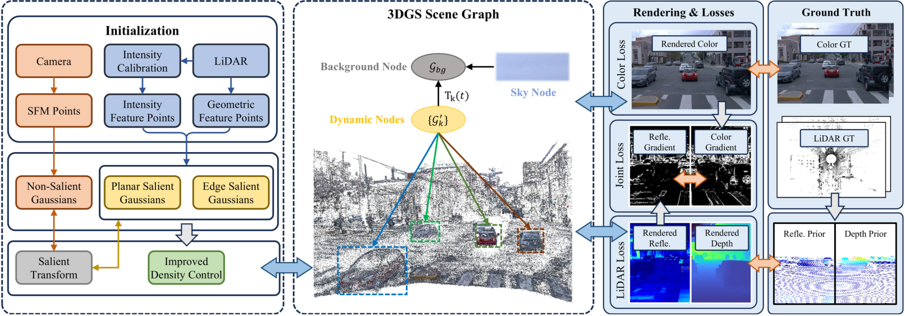
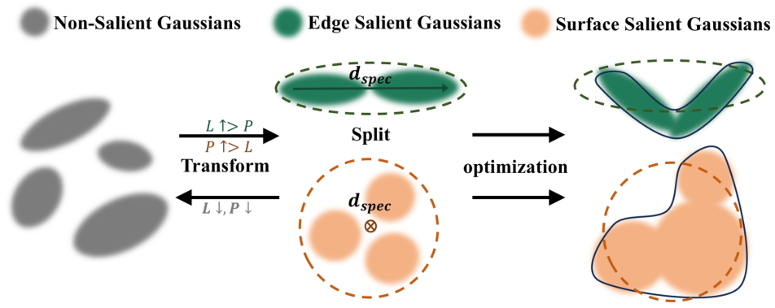
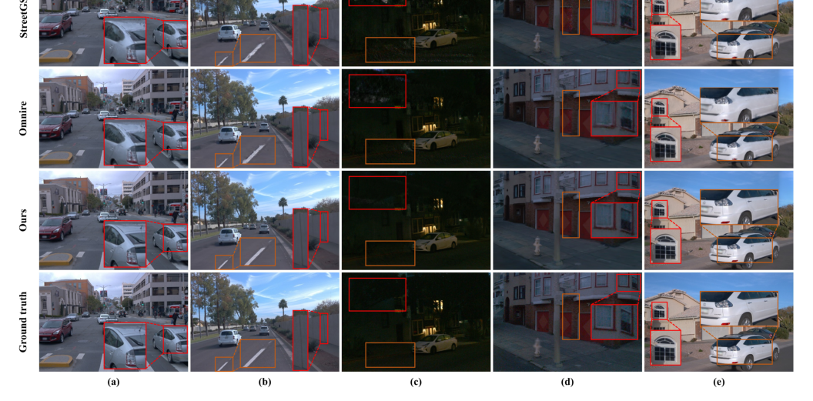
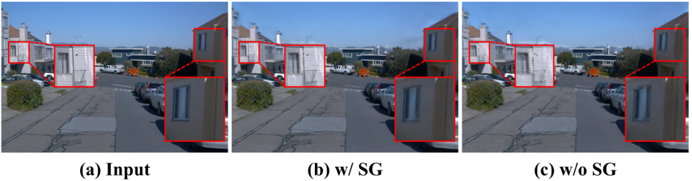

LR-SGS
简单摘要
这项工作的核心问题可以概括为：最近的 3D 高斯分布 (3DGS) 方法已经证明了自动驾驶场景重建和新颖视图合成的可行性。
其关键方案可以总结为：然而，大多数现有方法要么仅仅依赖相机，要么仅使用LiDAR进行高斯初始化或深度监督，而点云中包含的丰富场景信息，例如反射率，以及LiDAR和RGB之间的互补性。
从机制上看，最重要的设计是：为了解决这些问题，我们提出了一种用于自动驾驶场景的稳健且高效的激光雷达反射引导显着高斯分布方法（LR-SGS），该方法引入了结构感知的显着高斯表示，从几何和反射初始化。
在训练与推理层面，主要关注点是：此外，我们将 LiDAR 强度校准为反射率，并将其作为光照不变材料通道附加到每个高斯，与 RGB 联合对齐以强制边界一致性。
从实验结果可以读出的主要信号是：在 Waymo 开放数据集上进行的大量实验表明，LR-SGS 以更少的高斯和更短的训练时间实现了卓越的重建性能。


简而言之，这篇论文关注的核心是：这项工作的核心问题可以概括为：最近的 3D 高斯分布 (3DGS) 方法已经证明了自动驾驶场景重建和新颖视图合成的可行性。 其关键方案可以总结为：然而，大多数现有方法要么仅仅依赖相机，要么仅使用LiDAR进行高斯初始化或深度监督，而点云中包含的丰富场景信息，例如反射率，以及LiDAR和RGB之间的互补性。…
这项工作的核心问题可以概括为：自动驾驶场景的高保真重建和新颖的视图合成技术对于端到端自动驾驶模型的测试和训练具有重要价值。
其关键方案可以总结为：对于模型测试，他们可以将现实驾驶场景中难以处理的关键安全事件再现到可控的数字空间中，从而能够更灵活、更安全地对改进的算法进行重新测试。
从机制上看，最重要的设计是：对于模型训练，单一场景可以进行多样化扩展，合成更丰富、更多样化的训练数据，模拟新传感器布置下的数据生成，并消除端到端传输时重新收集训练数据的需要。。
在训练与推理层面，主要关注点是：近年来，以基于图像的3D高斯溅射（3DGS）为代表的重建方法表现出了快速、高保真的真实感渲染性能，大量研究尝试将这些方法应用于户外驾驶场景。。
从实验结果可以读出的主要信号是：然而，在自动驾驶场景中，仅使用相机的方法容易受到复杂的光照条件和显着的自我运动的影响，从而导致纹理不一致和优化不稳定。
核心创新
本文提出了面向目标任务的结构化改造方案，在特征聚合与约束注入两个层面同时优化。该方案有效缓解了信息缺失与噪声累积问题，从而提升最终重建质量。
技术细节
下面按照论文的方法章节结构展开，重点说明模型的关键模块、公式设计和训练策略。这项工作的核心问题可以概括为：激光雷达强度校准激光雷达通过发射激光脉冲并记录飞行时间以及反射信号的返回能量来获得目标点的空间坐标和反射强度。其关键方案可以总结为：因此，可以使用通过距离和角度校正的强度来表示物体的反射率。从机制上看，最重要的设计是：是物体表面与激光束之间的入射角。在训练与推理层面，主要关注点是：其中 表示点 的局部法线， 是点 的相邻点。从实验结果可以读出的主要信号是：使用相机外部和内部，将点云投影到相机平面上，从而产生稀疏的激光雷达反射图像。这条公式用于定义模型中的核心计算关系：左侧给出目标量，右侧由输入与参数共同决定。阅读时可先关注 I、R 的物理/几何含义，再看它们如何影响训练目标或渲染结果。这条公式用于定义模型中的核心计算关系：左侧给出目标量，右侧由输入与参数共同决定。阅读时可先关注 p、T、n 的物理/几何含义，再看它们如何影响训练目标或渲染结果。这条公式用于定义模型中的核心计算关系：左侧给出目标量，右侧由输入与参数共同决定。阅读时可先关注 g_i、I_i、I_j、p 的物理/几何含义，再看它们如何影响训练目标或渲染结果。这条公式用于定义模型中的核心计算关系：左侧给出目标量，右侧由输入与参数共同决定。阅读时可先关注 j、K、p、i 的物理/几何含义，再看它们如何影响训练目标或渲染结果。这条公式用于定义模型中的核心计算关系：左侧给出目标量，右侧由输入与参数共同决定。阅读时可先关注 G_j、M、I_j、p 的物理/几何含义，再看它们如何影响训练目标或渲染结果。把全文方法串起来看，这篇论文的逻辑基本都遵循同一条主线：先把输入组织成更容易处理的表示，再通过模型结构和损失函数把这个表示推向目标输出，最后用可视化与数值实验共同证明该设计有效。
$$ I =\eta_{all}\frac{\rho\cos\alpha}{R^{2}} $$
$$ \cos\alpha = \frac{\mathbf{p}^{\text{T}}\cdot\mathbf{n}}{\|\mathbf{p}\|} , \mathbf{n}=\frac{\left(\mathbf{p}-\mathbf{p}_{1}\right) \times\left(\mathbf{p}-\mathbf{p}_{2}\right)}{\|\mathbf{p}-\mathbf{p}_{1}\| \cdot\|\mathbf{p}-\mathbf{p}_{2}\|} $$
$$ g_i=\sqrt{\left(\frac{I_i-I_j}{\|\mathbf{p}_i-\mathbf{p}_j\|}\right)^2+\left(\frac{I_i-I_k}{\|\mathbf{p}_i-\mathbf{p}_k\|}\right)^2} $$
$$ c_{j}=\frac{1}{|K| \cdot\left\|\mathbf{p}_{j}\right\|}\left\|\sum_{\mathbf{p}_{i} \in \mathcal{P}_{j}, i \neq j}\left(\mathbf{p}_{i}-\mathbf{p}_{j}\right)\right\| $$
$$ G_j=\left|\frac{1}{M+1}\left(I_j+\sum_{{\mathbf{p}}_m^M\in{\mathbf{P}}_M}I_m\right)-\frac{1}{N}\sum_{{\mathbf{p}}_n^N\in{\mathbf{P}}_N}I_n\right| $$



实验结论
实验显示该方法在多组数据集上均取得一致增益，尤其在稀疏输入条件下优势更明显。可视化与定量结果相互印证，说明方法改动具备真实有效的贡献。
理解评价
这项工作的核心问题可以概括为：通过校准 LiDAR 强度以获得光照不变的反射通道，从 LiDAR 几何和反射特征点初始化结构感知的显着高斯，LR-SGS 在具有挑战性的条件下实现了更高的保真度和鲁棒性。。
其关键方案可以总结为：此外，LR-SGS 的可编辑场景表示支持可扩展的训练数据生成和真实的自动驾驶模拟环境。从机制上看，最重要的设计是：我们相信我们的工作对推进自动驾驶做出了重大贡献。在训练与推理层面，主要关注点是：未来的工作将覆盖更广泛的场景和更大规模的自动驾驶场景。
如果把它当成研究参考，建议重点关注三件事：第一，这套方法真正依赖的归纳偏置是什么；第二，实验中真正拉开差距的模块是哪一个；第三，它的局限究竟来自数据、算力还是监督信号本身。
以下相关论文可以作为进一步追踪的入口：。